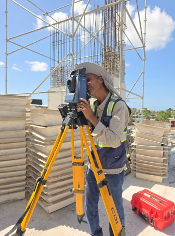

Casa del Ingeniero nació con la visión de brindar soluciones precisas y confiables al sector de la ingeniería y la construcción en República Dominicana. Fundada por Sonia del Pilar, mujer emprendedora y apasionada por la tecnología, CDI se ha consolidado como una empresa especializada en la venta de equipos topográficos de alta calidad, representando marcas reconocidas como Topcon y CHC Navigation.
La empresa se destaca por su compromiso, atención personalizada y una amplia oferta de servicios técnicos y profesionales, lo que la ha posicionado como un referente en soluciones topográficas en Santo Domingo. Nuestra historia está marcada por el esfuerzo, la resiliencia y una visión clara: ser aliados estratégicos en cada proyecto de nuestros clientes.